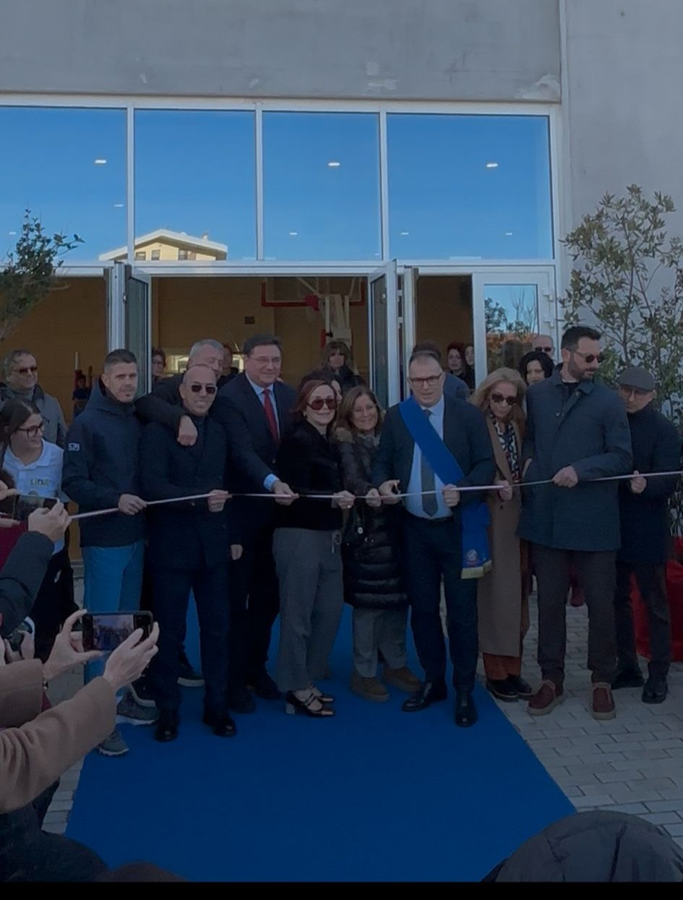
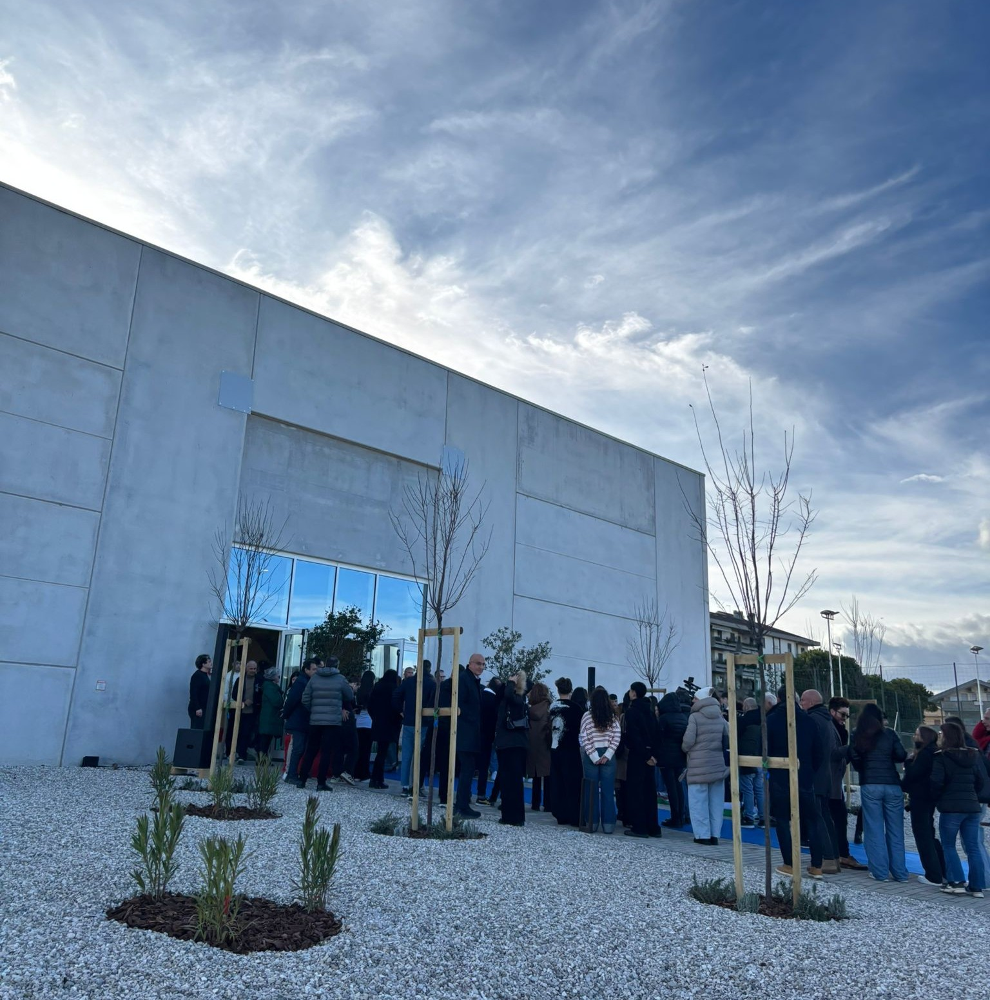
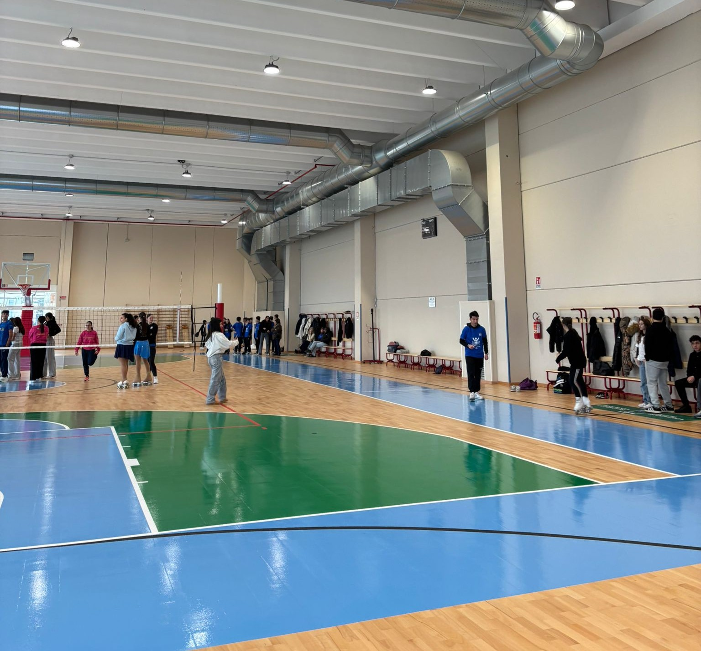
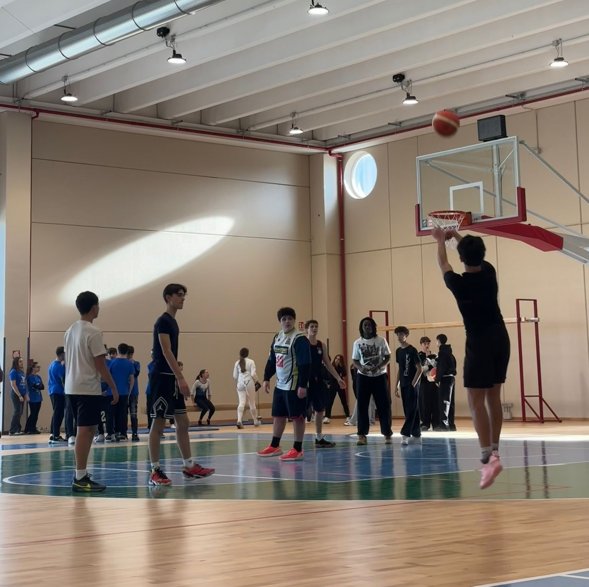

Obiettivi
Documentare l’inaugurazione con scatti che valorizzino spazi, partecipazione, momenti simbolici e atmosfera generale.
DOCUMENTAZIONE UFFICIALE
Questa pagina raccoglie in modo unico e continuo: una selezione di foto dell’evento, la relazione in PDF e il contenuto multimediale realizzato con Canva.
Documentare l’inaugurazione con scatti che valorizzino spazi, partecipazione, momenti simbolici e atmosfera generale.
Divisione dei ruoli, scelta dei momenti chiave, selezione e revisione degli scatti, impaginazione della relazione e creazione del contenuto Canva.
Un prodotto unico: relazione + galleria fotografica + contenuto multimediale, collegati in modo coerente e continuo.




La relazione è visualizzabile direttamente qui sotto e scaricabile con un click.
Video riassuntivo realizzato con Canva per documentare i momenti principali dell’inaugurazione.
Ruolo: scatti principali / Sviluppatore
Ruolo: selezione / Canva / impaginazione
Ruolo: Editing / Relazionista
Ruolo: Giornalista / Relazionista
Ruolo: Giornalista / Relazionista